For the first half of the 1980s, Astronomy Club was consumed with the construction of the Truman Kohman Observatory. Finally in October 1986, the observatory was completed and opened for the first time. The TKO is located in the Penthouse of Scaife Hall. The space was originally used for climate control. When the system was upgraded, room and money where left over to build the observatory.
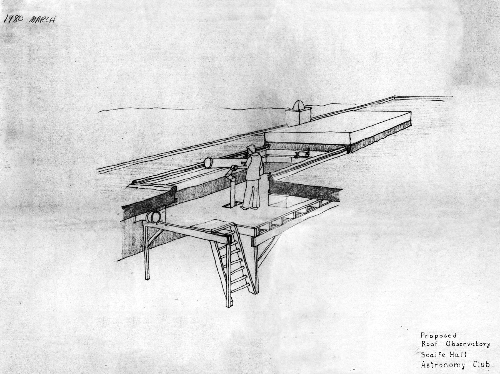
The vision for the Truman Kohman Observatory.
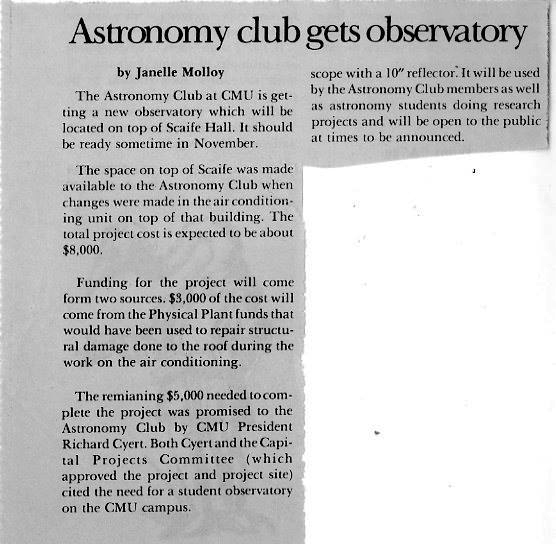
Article detailing the constriction of the observatory.
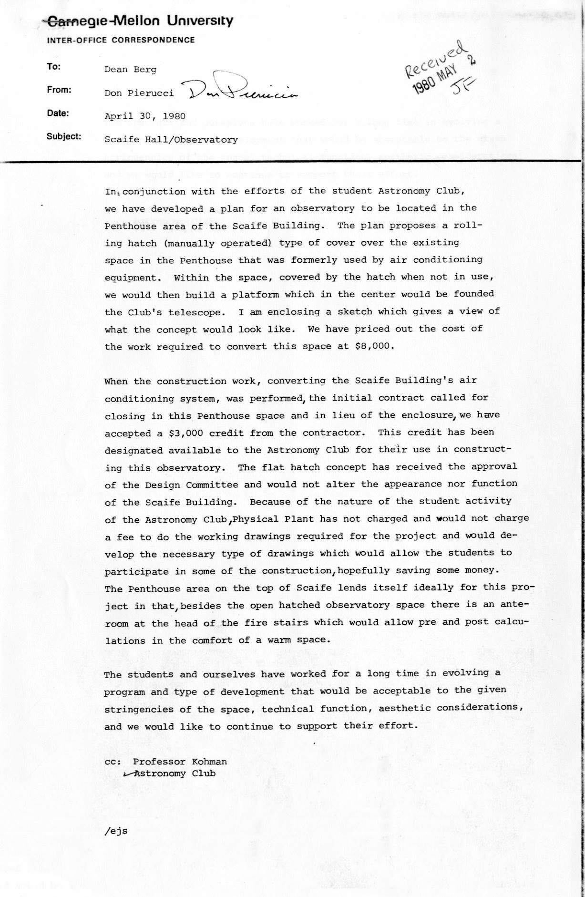
Letter describing the plans for the observatory space.
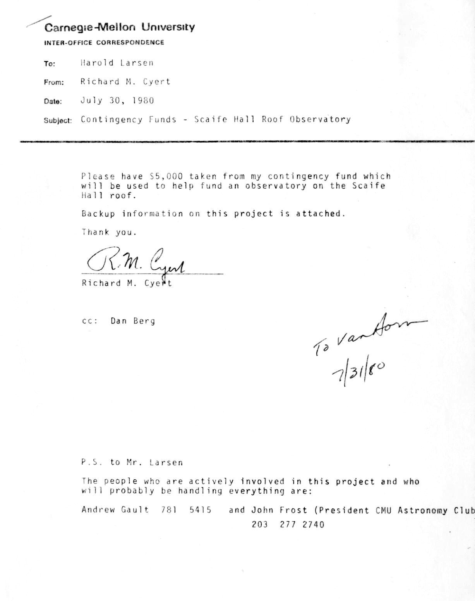
Letter from Richard Cyert providing observatory funding.
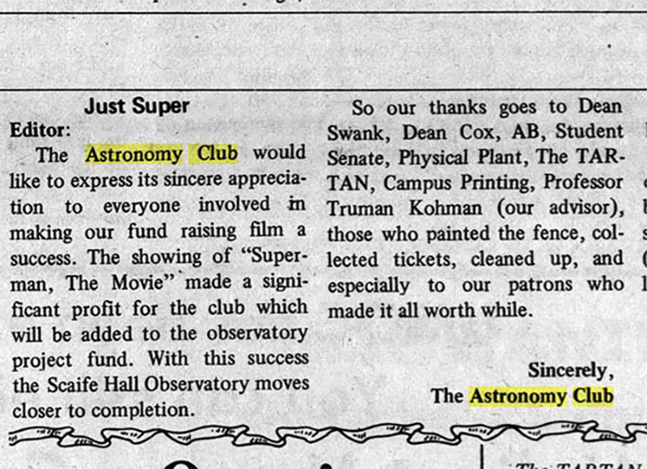
A 1980 movie veiwing to raise funds for the observatory.
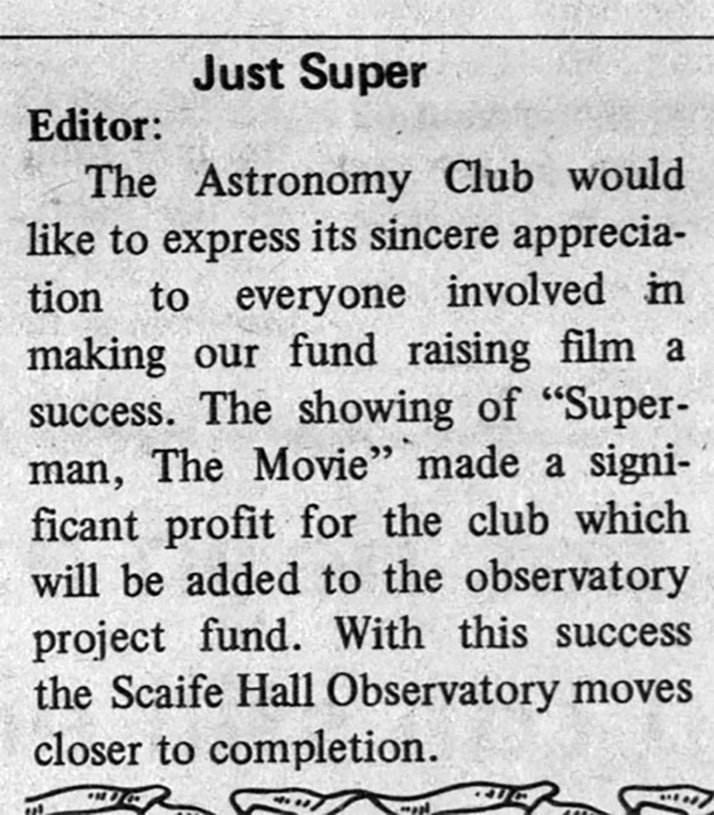
Another 1980 thank you.
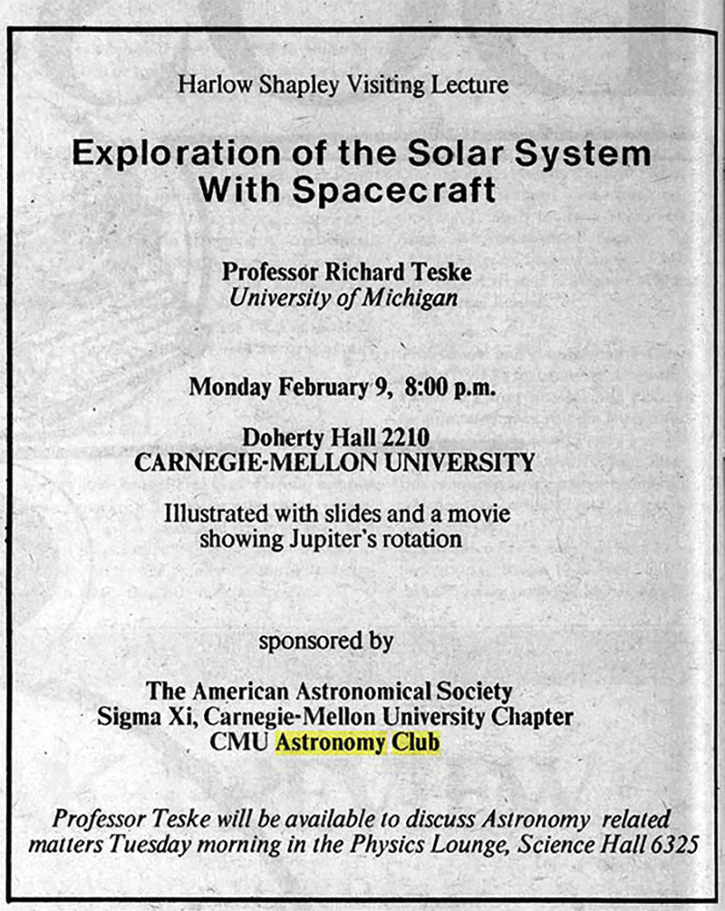
A 1981 presentation by a visiting scientist.
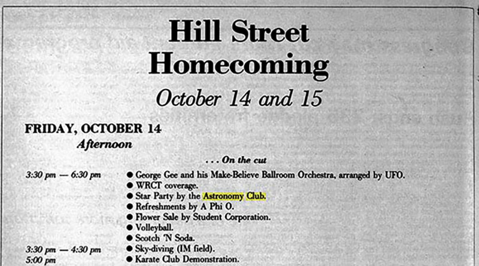
Star party for 1983 homecoming.
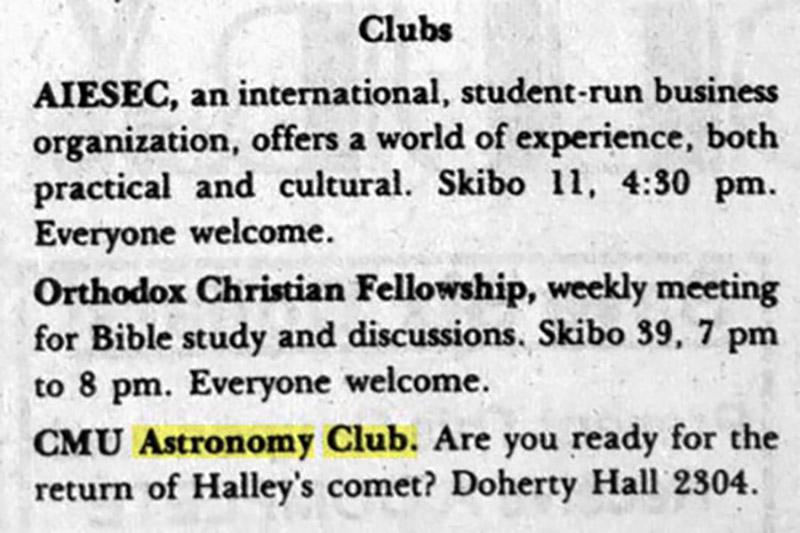
1985 preparations for Halley's comet.
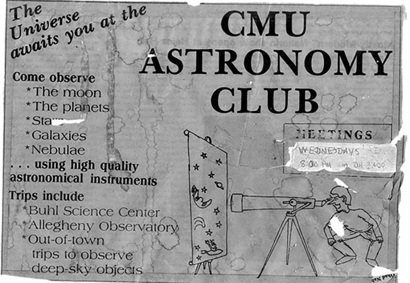
AstroC ad.AstroC 1985 ad.
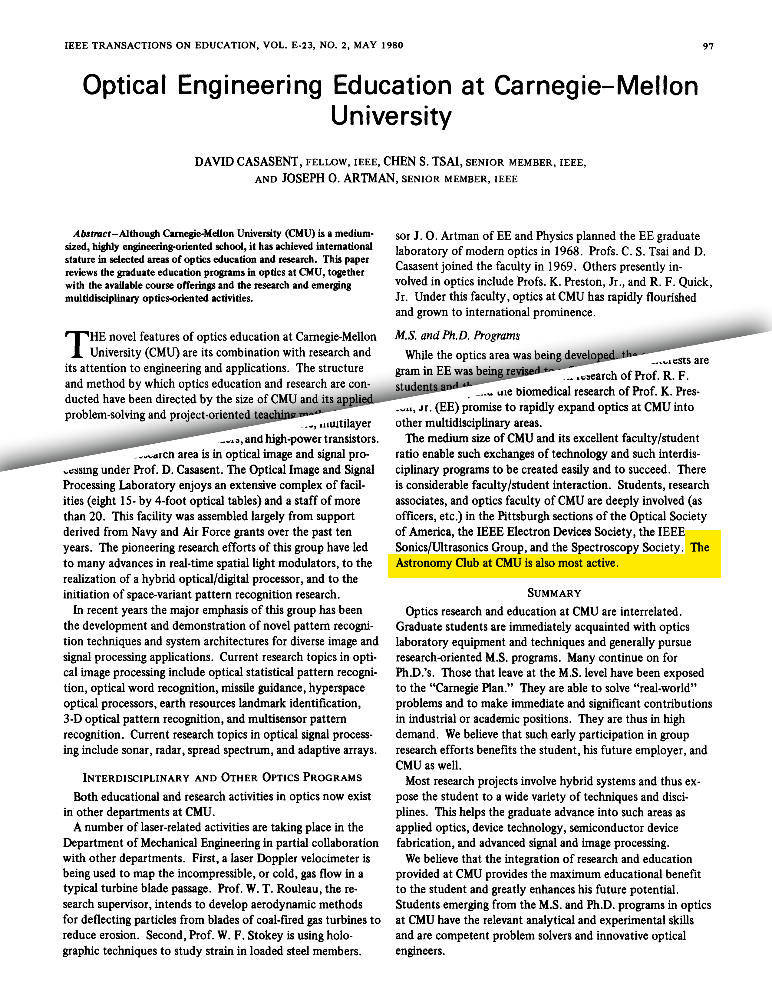
AstroC gains fame for its activities.